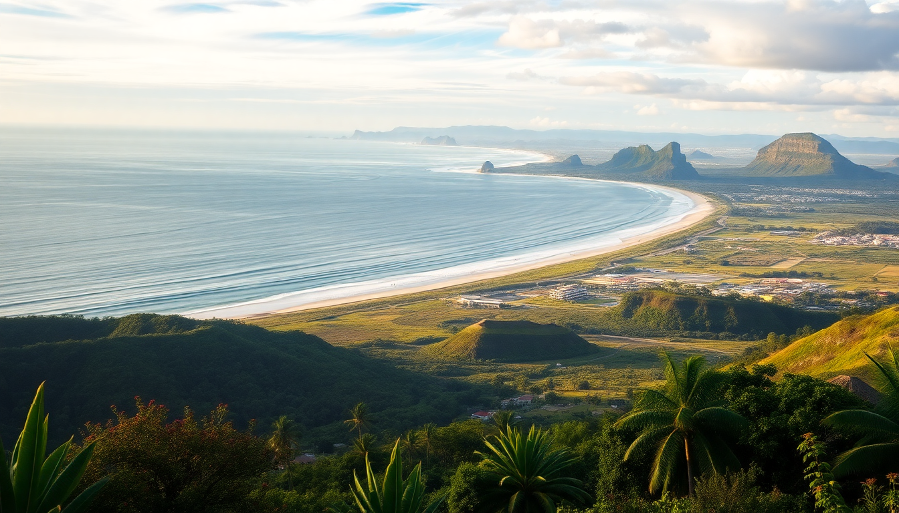

Best Beaches in Bali: A Practical Guide to Top Coastlines

I spent two weeks island-hopping across Bali, and the first thing I learned is that not every beach lives up to the Instagram hype. Some are perfect for a lazy swim; others are better for a sunset beer and people-watching. Here’s what I found after hitting the sand from Seminyak to Nusa Dua—no fluff, just the real picks.
Which beach in Seminyak is actually worth your time?
Seminyak Beach is the default choice for most visitors staying in the area, and for good reason. The sand is dark volcanic grey—not the white you see in postcards—but it packs firm, making it great for long walks. I grabbed a Bintang at La Plancha (their rainbow beanbags are hard to miss) and watched the sun drop straight into the ocean. The surf here is gentle in the morning but picks up by midday, so if you’re a beginner, go early.
The main stretch between Double Six Beach and Petitenget Temple gets crowded by 3 PM. I preferred the quieter patch near The Legian hotel’s public access point—fewer vendors, more locals fishing.
- La Plancha – best sunset spot with cheap drinks and beanbags
- Petitenget Temple – a quick cultural stop before you hit the sand
- Double Six Beach – livelier, with beach clubs and DJs on weekends
- The Legian public access – quieter sand, good for reading
Is Jimbaran Bay overrated for seafood dinners?
Yes and no. Jimbaran Bay is famous for the rows of seafood restaurants set up on the sand with lanterns and tables right at the waterline. I tried Menega Cafe one night and the grilled fish was fresh, but the prices are inflated for tourists—expect to pay 300k IDR for a mixed platter. The real draw is the atmosphere: your feet in the sand, waves lapping, and a string of planes landing at Ngurah Rai overhead.
For swimming, Jimbaran is calm and shallow, so it’s safe for kids. But the water clarity isn’t great compared to Nusa Dua. I’d skip the midday heat and come at 4 PM for a late swim followed by dinner.
- Menega Cafe – most popular, book ahead for a front-row table
- Jimbaran Beach – calm water, good for families
- Pasar Ikan Kedonganan – fish market nearby if you want to buy your own catch
What makes Nusa Dua different from the other beaches?
Nusa Dua is the resort enclave, and it shows. The beaches here are manicured—white sand, no seaweed, and security guards at every public access point. I stayed at The Mulia for two nights, and the stretch of beach in front of the resort was spotless, with lifeguards and shaded loungers. The water is flat and clear, perfect for snorkeling without a boat.
The downside? It feels sterile. There are no warungs selling fresh coconut or stray dogs napping on the sand. If you want a lively scene, Nusa Dua isn’t it. But for a calm swim and a poolside afternoon, it’s the best in Bali. The Nusa Dua Beach public area near the convention center is free and well-maintained, with decent rental gear for kayaks.
- The Mulia – top-tier resort with private beach access
- Nusa Dua Beach – public section, clean and patrolled
- Geger Beach – a quieter alternative just south, with a few warungs
Where should I go for a beach that’s not crowded?
For a break from the crowds, I drove 45 minutes north to Pasir Putih (White Sand Beach) near Candidasa. It’s a cove with actual white sand—rare in Bali—and a handful of warungs serving cold drinks and simple nasi goreng. The water is calm, and I only shared the beach with about 20 other people on a Saturday. No beach clubs, no DJs, just a hammock and a book.
Closer to the main areas, Balangan Beach on the Bukit Peninsula is another uncrowded gem. It’s a 15-minute scooter ride from Jimbaran, with a long stretch of sand and a single cliffside cafe called Balangan Sea View. The surf is stronger here, so it’s better for watching boarders than swimming.
- Pasir Putih – far from the crowds, worth the drive
- Balangan Beach – cliff views and mellow vibes
- Balangan Sea View – grab a coconut and watch the waves
Which beach has the best surf for beginners?
If you’re learning to surf, head to Kuta Beach—yes, the one everyone says is too touristy. The waves break consistently and gently, and there are a dozen surf schools along the sand. I took a lesson with Up2U Surf School for 250k IDR (about $16) and was standing up by the second wave. The beach itself is wide and crowded, but the water is shallow for a long way out, so you won’t panic.
For a less packed alternative, Canggu (specifically Batu Bolong Beach) offers a similar wave with a more chilled crowd. The black sand gets hot, so bring flip-flops. I preferred the vibe at Batu Bolong—more surfers, fewer backpackers selling bracelets.
- Kuta Beach – classic learner spot, tons of schools
- Up2U Surf School – reliable instructors, gear included
- Batu Bolong Beach – Canggu’s best for intermediate waves
FAQ
What is the best time of year to visit Bali’s beaches? Dry season from April to October is the sweet spot. I went in June and had blue skies every day with calm seas. November to March brings rain and rough surf, especially on the west coast.
Are the beaches in Bali safe for swimming? Most are, but watch for rip currents on the west coast (Kuta, Seminyak) during the wet season. Nusa Dua and Jimbaran are safest year-round. Red flags mean stay out—locals will usually shout a warning.
Do I need to pay for beach access in Bali? No, all beaches are public by law. Some resorts try to block access, but you can always enter from the public path. Parking may cost 5,000–10,000 IDR at popular spots.
Conclusion
- Seminyak Beach is best for sunset drinks and a walk, not swimming.
- Jimbaran Bay delivers on atmosphere for dinner but skip the overpriced tourist spots.
- Nusa Dua is your pick for a clean, calm swim in resort surroundings.
- Pasir Putih and Balangan beat the crowds without sacrificing beauty.
- Kuta and Batu Bolong offer the most beginner-friendly surf waves.